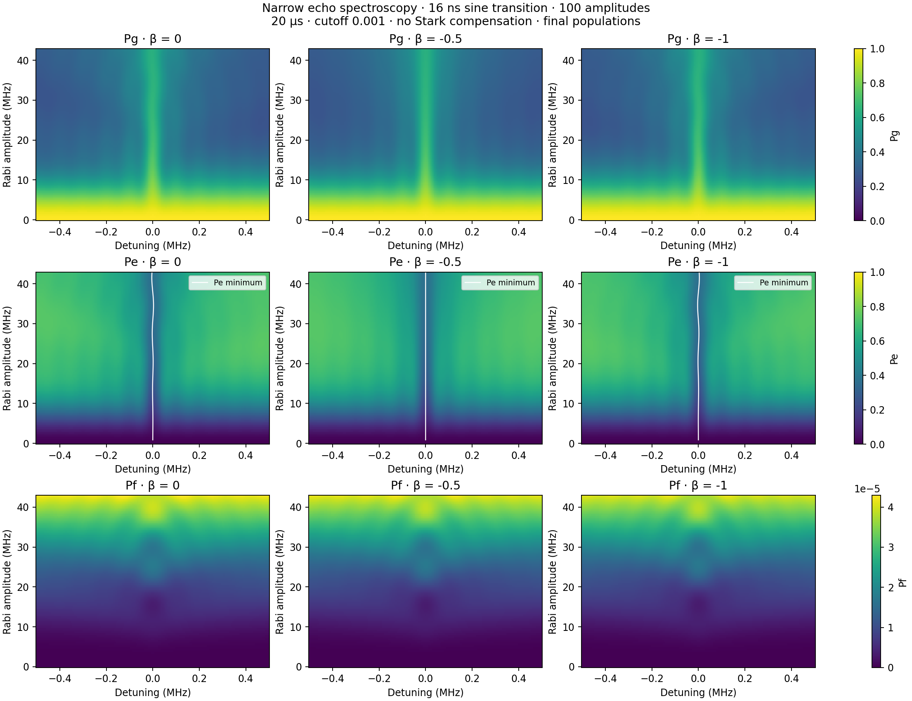
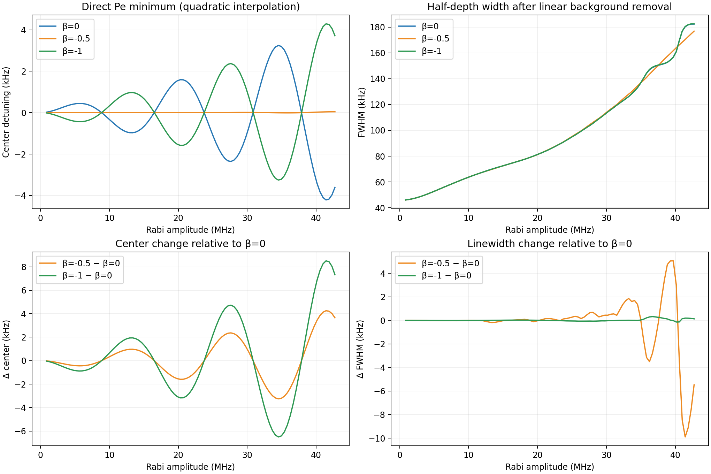
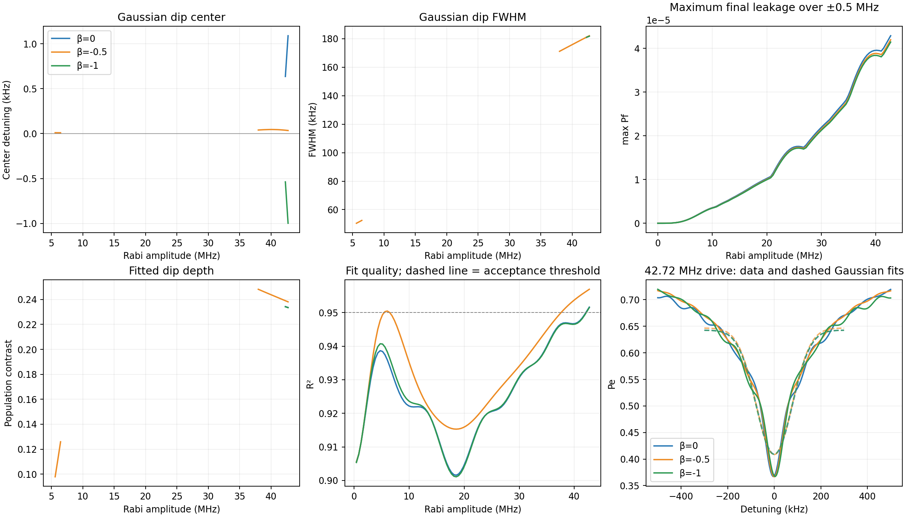
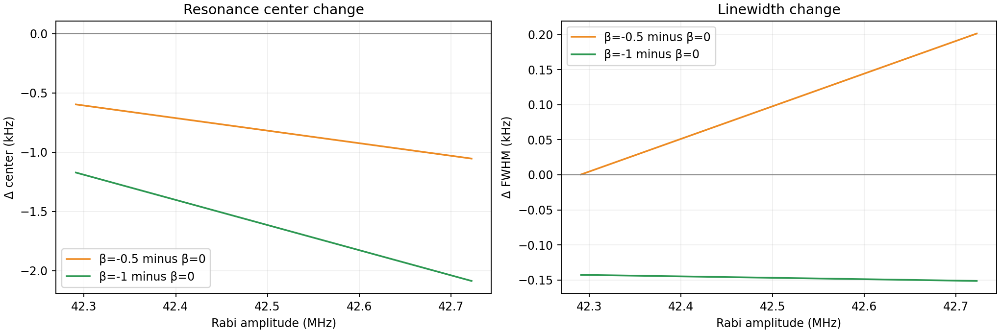
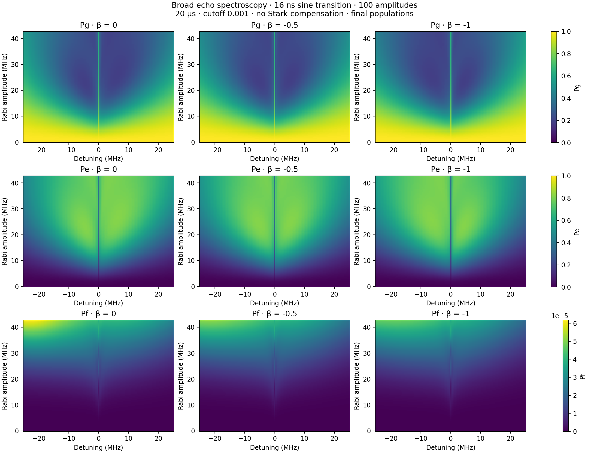
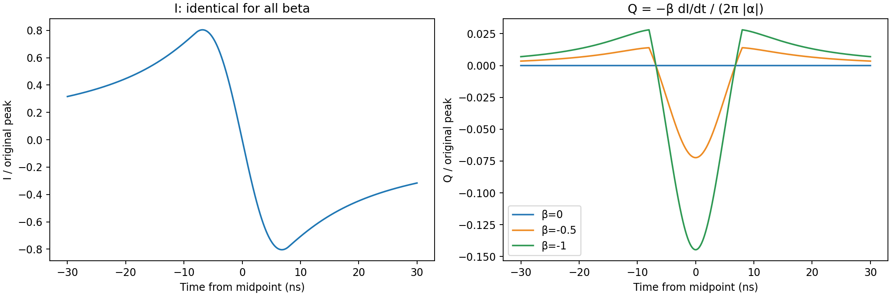
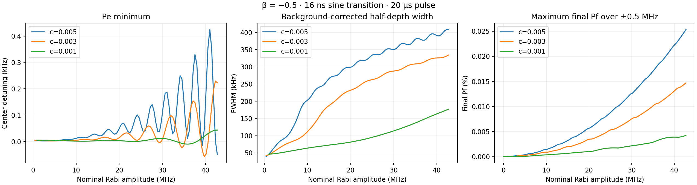

100 amplitude points over the original Figure 2 range (0–42.7 MHz). 20 µs pulse, cutoff 0.001, T1=51.24 µs, T2=7.31 µs, α=−216 MHz. Identical I envelopes; no Stark compensation. All results are simulated final populations. White map curves show directly located Pe minima.
The direct comparison uses the raw Pe minimum, refined quadratically, and a half-depth width after subtracting a linear background fitted to |detuning| ≥ 0.4 MHz. This operational width depends on the chosen background. No smoothing is applied.
The additional Gaussian center and linewidth use a Gaussian fit to Pe over ±0.3 MHz, with one-bin smoothing. Poor, weak, unresolved and clipped fits are omitted. The fit-quality plot and example fits expose deviations from a Gaussian shape.
| β | Pe minimum (kHz) | Half-depth width (kHz) | Max final Pf over narrow map (%) |
|---|---|---|---|
| 0 | -3.61 | 182.32 | 0.00429 |
| -0.5 | 0.04 | 176.86 | 0.00420 |
| -1 | 3.72 | 182.46 | 0.00414 |
These high-drive values are one slice of the amplitude-dependent curves below.
Direct center/linewidth CSV · Gaussian fits CSV · Parameters and convergence






{
"parameters": {
"duration_us": 20.0,
"t1_us": 51.24,
"t_phi_us": 7.871480508563624,
"anharmonicity_mhz": -216.0,
"cutoff": 0.001,
"order": 0.5,
"echo": true,
"echo_transition_shape": "sine",
"drag_beta": 0.0,
"stark_kappa_mhz_inv": 0.0,
"echo_transition_us": 0.016
},
"betas": [
0.0,
-0.5,
-1.0
],
"amplitude_points": 100,
"dt_ns": 0.5,
"summary": [
{
"beta": 0.0,
"max_final_pf": 4.2896937901501686e-05,
"accepted_fits": 2,
"high_drive_fit": {
"center_hz": 1089.0586151558937,
"fwhm_hz": 181905.46533120493,
"center_error_hz": 1684.6055031752087,
"fwhm_error_hz": 5168.539529014921,
"r_squared": 0.9516387371966311,
"contrast": 0.2335963270357121,
"accepted": true
},
"high_drive_direct": {
"center_hz": -3611.240576271466,
"fwhm_hz": 182324.78499856783,
"contrast": 0.3369679889998365,
"accepted": true
},
"max_population_error": 1.6383866134709333e-07,
"max_checked_direct_center_error_hz": 0.006147543914721609,
"max_checked_direct_fwhm_error_hz": 0.007615659502334893,
"max_checked_center_error_hz": 0.0033684701445508836,
"max_checked_fwhm_error_hz": 0.011364524252712727
},
{
"beta": -0.5,
"max_final_pf": 4.197338811041753e-05,
"accepted_fits": 15,
"high_drive_fit": {
"center_hz": 34.34710409857443,
"fwhm_hz": 182106.97683373597,
"center_error_hz": 1586.1032470320224,
"fwhm_error_hz": 4869.587790790367,
"r_squared": 0.956946292000626,
"contrast": 0.2381186099881022,
"accepted": true
},
"high_drive_direct": {
"center_hz": 43.39424949199844,
"fwhm_hz": 176857.59899007535,
"contrast": 0.34274509762051153,
"accepted": true
},
"max_population_error": 7.653947958417129e-08,
"max_checked_direct_center_error_hz": 0.0022399333536142763,
"max_checked_direct_fwhm_error_hz": 0.030518952233251184,
"max_checked_center_error_hz": 0.2825793425093366,
"max_checked_fwhm_error_hz": 0.02027199708390981
},
{
"beta": -1.0,
"max_final_pf": 4.1448831422229526e-05,
"accepted_fits": 2,
"high_drive_fit": {
"center_hz": -997.9571798993859,
"fwhm_hz": 181754.07903163382,
"center_error_hz": 1686.3467002525556,
"fwhm_error_hz": 5171.276290250176,
"r_squared": 0.9514983788072673,
"contrast": 0.23346837363230186,
"accepted": true
},
"high_drive_direct": {
"center_hz": 3715.96262797129,
"fwhm_hz": 182460.27889764548,
"contrast": 0.33678809765427303,
"accepted": true
},
"max_population_error": 8.555426544987199e-08,
"max_checked_direct_center_error_hz": 0.008709535824436898,
"max_checked_direct_fwhm_error_hz": 0.0711896886350587,
"max_checked_center_error_hz": 0.021109116973661912,
"max_checked_fwhm_error_hz": 0.026126518117962405
}
],
"source_runs": {
"broad": "2026-08-25/six_detuning_amplitude_sweeps/03_broad_50mhz_cutoff_0p005_echo",
"narrow": "2026-08-25/six_detuning_amplitude_sweeps/06_narrow_1mhz_cutoff_0p005_echo"
},
"convention": "I=L*s, no renormalization; Q=-beta*dI/dt/(2*pi*abs(alpha)); drive=I-iQ",
"direct_metrics": "Center: raw Pe minimum refined quadratically. Width: nearest half-depth crossings after subtracting linear background fitted on |detuning|>=0.4 MHz; finite-window operational width.",
"fitting": "Pe Gaussian dip on \u00b10.3 MHz after 1-bin Gaussian smoothing; FWHM=2sqrt(2ln2)*sigma. Require R2>=0.95, depth>=0.001, FWHM>=15 kHz, and both half-depth points inside fit window. Zero drive excluded. No uncertainty from fit covariance is interpreted as physical uncertainty.",
"caveat": "Final Pf, not transient peak leakage; three-level Markovian simulation. Fitted center and FWHM describe the Gaussian approximation, not necessarily the exact minimum or literal half-depth width."
}Halving spacing from 5 to 2.5 kHz at selected β=−0.5 amplitudes changed the center by at most 0.128 Hz and width by 17.1 Hz.
